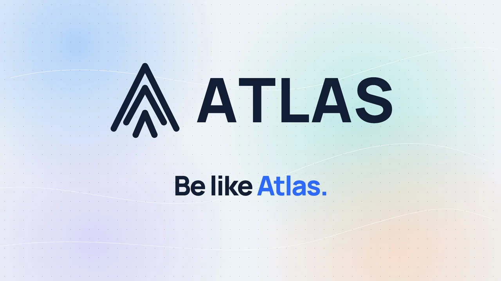
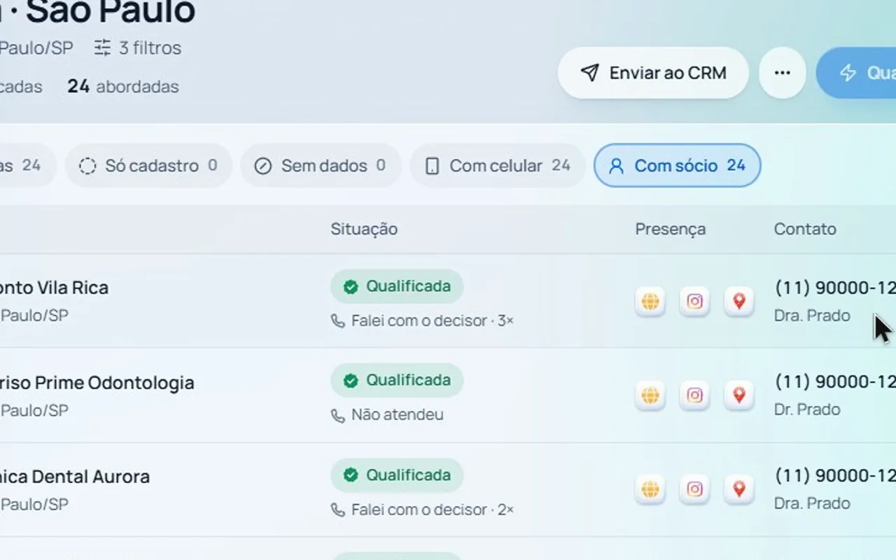

Seu próximo cliente, encontrado, qualificado, abordado e agendado.
O Atlas acha quem decide na empresa certa e leva a conversa até a reunião na sua agenda.
Não precisa de cartão.
Da busca à reunião, em menos de dois minutos.
Uma lista de clínicas vira horário marcado na agenda. Aperte o play e acompanhe cada passo que o Atlas dá sozinho.

Sete etapas, do nicho escolhido à reunião marcada. Toque numa delas para pular direto.
Quer ver com o seu nicho no lugar das clínicas? Agende uma demonstração
8 áreas trabalhando enquanto você vende.
Cada uma cuida de um trecho do caminho até a reunião. Toque num ícone e veja a área rodando de verdade.
O número de quem decide, conferido antes de entrar na sua lista.
Cada lead na etapa certa, com o histórico de todos os contatos.
WhatsApp, Instagram e e-mail respondidos ao lado da ficha do lead.
Pergunte quem ligar agora e receba a resposta com o nome do lead.
Bots que respondem no tom da sua empresa e levam a conversa adiante.
O roteiro de cada toque pronto, já com o nome do lead.
A fila do dia, a dor provável de cada lead e o roteiro na tela.
Receita, gargalo do funil e o retorno de cada real em anúncio.
Prospectar
O número de quem decide, conferido antes de entrar na sua lista.

Antes da demonstração, três perguntas.
Responda pela sua última semana, com um toque em cada. Nada do que você marcar sai desta página.
A sua conta travou em encontrar quem decide.
Por dentro do Atlas.
Um passeio de 37 segundos por dentro do Atlas, do Orbit ao Dashboard. A tela inteira, sem pressa, fica para quando você entrar.
O resto a gente mostra com você no controle. Agendar demonstração
AtlasLike, o outbound feito por nós.
O time do Atlas assume a sua prospecção, da lista à reunião marcada. Você aparece para a conversa de venda.
Sob medida: créditos, canais e volume desenhados a partir da sua meta de reuniões.
Onde as vendas se perdem.
Quatro números de pesquisas recentes sobre vender. A fonte de cada um está logo abaixo dele.
-
38%
das empresas brasileiras citam “o cliente parou de responder” como motivo de venda perdida. É o motivo mais citado.
RD Station, Panorama de Vendas 2026 -
28%
dos times brasileiros ligam o WhatsApp ao CRM. Em 40%, cada vendedor conversa do seu jeito.
RD Station, Panorama 2026 -
19
ligações, em média, para conseguir uma conversa. Os melhores vendedores precisam de 8.
Gong Labs, 2024 -
4,4x
mais reuniões marcadas quando a cadência liga a cada e-mail enviado.
Salesloft, 2026
Conferido em novembro de 2026.
O que roda por dentro do Atlas.
Os modelos de IA que pensam junto com você e os canais onde as suas conversas acontecem.
- Claude, da AnthropicO modelo que responde no Atlas Orbit, por voz, texto ou print.
- GPT e GeminiNos agentes de IA do Flow, você escolhe o modelo: Claude, GPT ou Gemini.
- WhatsApp e InstagramAs conversas dos dois chegam na Inbox, ao lado da ficha do lead.
- Gmail e LinkedInO seu e-mail junto dos leads e decisores achados por cargo, setor e cidade.
Conectado ao que você já usa.
O hub do Atlas tem 28 integrações, de anúncios a telefonia. Algumas delas:
- KommoMigrar de CRM
- HubSpotMigrar de CRM
- RD Station CRMMigrar de CRM
- Google AgendaAgenda
- Google PlanilhasCaptar leads
- GmailComunicação
- Meta AdsAnúncios
- Google AdsAnúncios
- ZapierAutomações
- MakeAutomações
- n8nAutomações
- SalesforceMigrar de CRM
- API4COMTelefonia
- + 15 integraçõesTwilio, Notion, ClickUp e mais
Escolha até onde o Atlas vai por você.
Cada plano acende mais apps no caminho até a reunião. Comece no grátis, com 25 decisores, e suba quando a lista pedir. Os valores, a gente mostra na demonstração ou dentro da conta.
-
Grátis
Para conhecer, com dados reais e sem cartão.
25decisores grátis
- Lista na ordem
- Telefone do decisor
- Site e redes
O crédito só sai quando o Atlas encontra dados reais.
Criar conta grátis -
Start
Para quem prospecta sozinho, todo dia.
200créditos por mês
- CRM sem limite
- Tela Ligar
- Gmail
- Google Agenda
- 50 perfis
- 50 decisores
Até 3 telefones por empresa, com o do decisor.
Criar conta grátis -
Pro
Prospectar, conversar e fechar no mesmo lugar.
1.000créditos por mês
- Atlas Orbit
- WhatsApp no CRM
- Direct na Inbox
- Cadências
- Chatbot com IA
- Meta Ads
- Google Ads
- Planilhas
- Zapier e Make
Tudo do Start, mais o que está acima.
Criar conta grátis -
Scale
O Pro para cada vendedor, com o líder vendo tudo.
3 a 20usuários
- Painel do líder
- Orbit por pessoa
- Dashboard por vendedor
- Passar leads
- 2.500 a 8.000 créditos
- Atlas Academy
Tudo do Pro, para cada pessoa do time.
Agendar demonstração -
Creator
Para quem acha clientes no Instagram.
300perfis do Instagram por mês
- Busca por nicho
- Direct na Inbox
- CRM completo
- Gmail
- 50 decisores
- Atlas Media, em breve
200 créditos por mês para qualificar empresas.
Criar conta grátis
AtlasLike
A gente assume o seu outbound, da lista à reunião marcada. Tudo do Scale, com o time do Atlas operando.
- ICP, persona e oferta
- Listas verificadas
- Cadência em 5 canais
- Nosso time conversa
- Reunião na sua agenda
- Relatório de resultados
Quem faz o Atlas.
O Atlas é feito por dois cofundadores. Dá para chamar os dois no LinkedIn.

Comece pela sua própria lista.
25 decisores grátisCriar conta grátisCada crédito traz quem decide numa empresa. Não precisa de cartão.
Prefere ver antes? Agendar demonstração